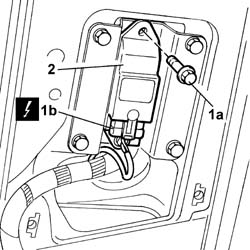
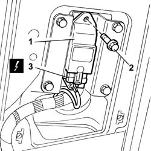

5580C40 sensor for side bag (one) lh or rh r r
- Path
- Procedures > 55 ELECTRICAL EQUIPMENT > 5580 SPECIAL ACCESSORIES > 5580C AIR BAG SYSTEM > 5580C40 sensor for side bag (one) lh or rh r r
- Kind
- repair procedure (removal / refitting; the operation number is the code)
- Applies to
- all engines; all production periods
- Interactive page
- https://sloeber94.github.io/elrnDB-lThss/en/#/79704
Applies to: all engines; all production periods
Applies to: all engines; all production periods
 Removing
Removing
 Refitting
RefittingSee in Op. 7040H36 CENTRE PILLAR TRIM LOWER ELEMENT (one), left or right - R.R.
See in Op. 7040H38 CENTRE PILLAR TRIM UPPER ELEMENT (one), left or right - R.R.
1. Undo the fixing bolts (1a) and disconnect the electrical connector (1b).
 | Description | Connector |
|---|---|---|
1b | Sensor for driver's Air Bag | K066 |
| Description | Connector |
|---|---|---|
1b | Sensor for passenger Air Bag | K067 |
2. Remove the sensor.

Applies to: all engines; all production periods
Refitting
Removing- Check that the sensor is not damaged.
1. Position the sensor in the housing.
2. Tighten the fixing bolts.
3. Connect the electrical connector.
| Description | Connector |
|---|---|---|
3 | Sensor for driver's Air Bag | K066 |
| Description | Connector |
|---|---|---|
3 | Sensor for passenger Air Bag | K067 |

Applies to: all engines; all production periods
See in Op. 7040H38 CENTRE PILLAR TRIM UPPER ELEMENT (one), left or right - R.R.
See in Op. 7040H36 CENTRE PILLAR TRIM LOWER ELEMENT (one), left or right - R.R.
- Connect the battery leads.